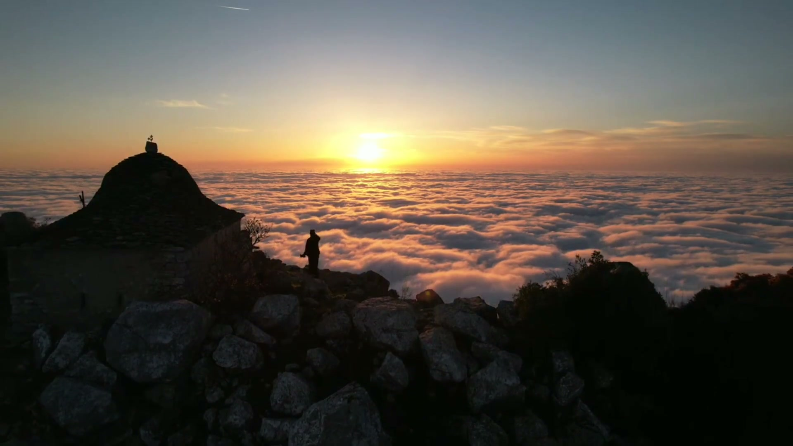
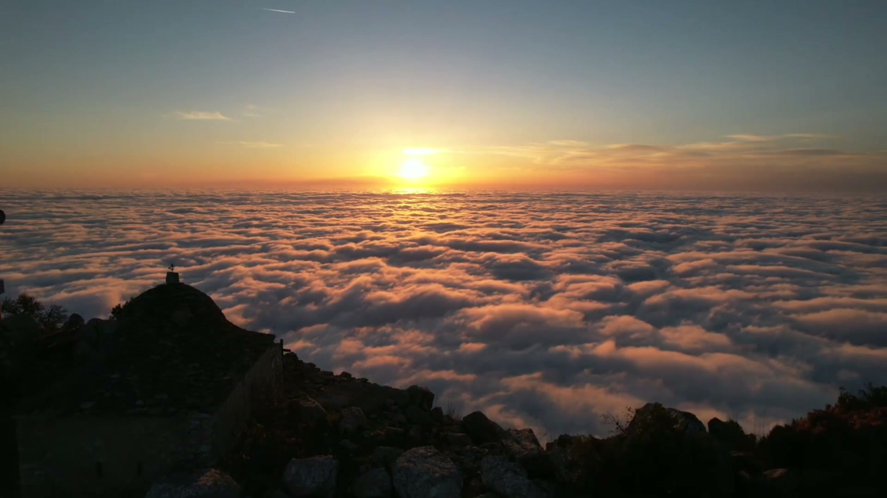
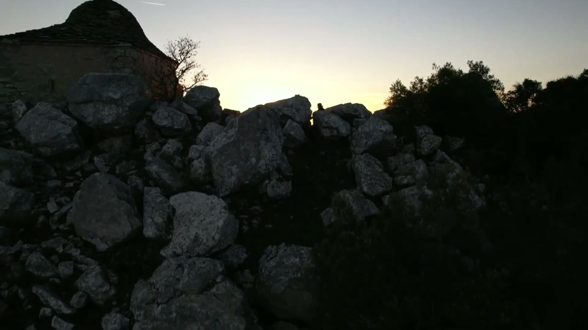
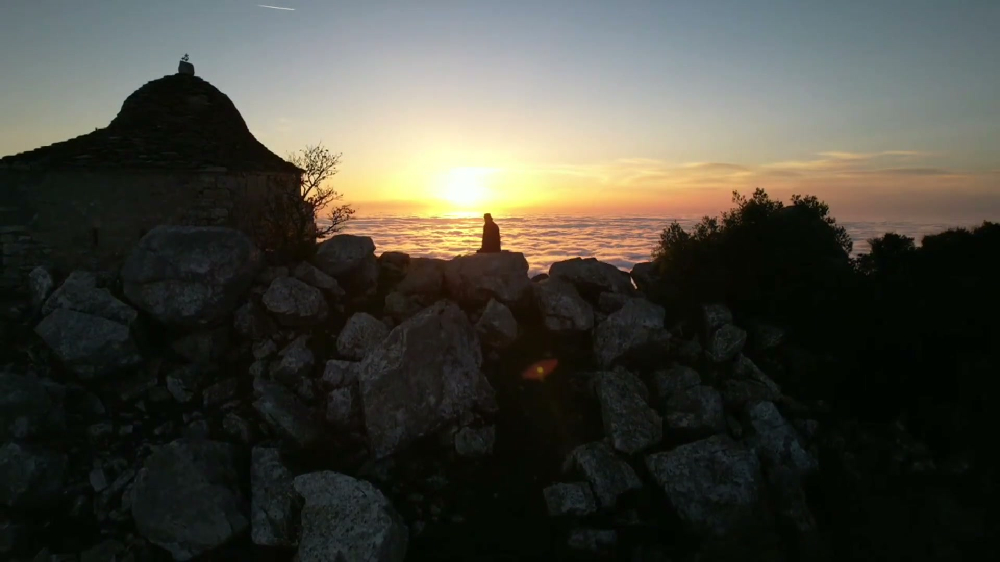

A pilgrimage to Athos is not a journey but a return to yourself. Twenty monasteries, a thousand years of prayer, and a dawn above the clouds you see once and remember for life.
On Athos time runs differently. Here, for a thousand years, the lamps have not gone out and the prayer has never fallen silent - and men come not for impressions, but for a stillness found nowhere in the world.
We prepare the pilgrimage from the first call to your return home: the diamonitirion - the permit to enter - the passage, lodging in the monasteries, meetings with the elders, and services you stand through until dawn.
In small groups or alone, for the first time or the tenth - the route is shaped around you. Our work is that on the road you think only of what matters.

The only way to the Holy Mountain is by sea. An hour and a half along the shore, past monasteries that rise straight from the rock - and the world is left behind.
Here the day is counted from sunset, and the service begins at night. A few days of this order change a man more than years in the world.
The climb to the peak of Athos - 2,033 metres. At the top, the small chapel of the Transfiguration, clouds underfoot, and a sun that rises for you alone.
We help arrange the diamonitirion - the personal permit of the Holy Community to enter. We choose dates to reach the right services and the right elders.
Flight, Thessaloniki, Ouranoupoli, the ferry. You are met and accompanied - not by a travel agent, but by someone who knows the Mountain and has returned to it for years.
Lodging in the monasteries, meals with the brotherhood, night vigils, veneration of the relics. Between the houses - on foot along mountain paths, or by jeep.
You carry home not photographs but silence. We stay in touch - for a blessing, a word, or the next road to the Mountain.



Whoever has been to Athos returns changed. Not because he saw beauty - but because for a few days he heard silence.
Leave your details - we will be in touch, ask about your dates and wishes, and propose a route. No commitment: first a conversation, then a decision.